Todo lo que sentimos tiene contexto.
Explora cómo se relacionan
nuestros procesos, emociones
y el entorno que nos rodea.


Explora cómo se relacionan
nuestros procesos, emociones
y el entorno que nos rodea.

